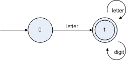

词法分析（字符串分析）
词法分析是编译器实现的第一步。主要是分析输入的源程序（字符串），输出该字符串中出现的所有的合法的单词。例如：int a = 3 + 5;经过词法分析会输出 int,a,=,3,+,5和;这七个单词。实现词法分析器的官方做法是：
1.写出各个单词的正规式（正则表达式）；
2.根据正规式构造NFA（不确定的有限自动机）；
3.将NFA转换DFA（确定的有限自动机）；
4.根据DFA就可以实现词法分析器，写出程序。
下面用实例来说明上面的各个步骤：
假设我们要实现一个很简单的脚本，该脚本中只有两种类型的单词，一种就是变量，变量名的规则就是以字母开头后面紧跟0个或多个字母或数字的的字符串，如 a 和 a12d3 等；另一种就是操作符，很简单只有 &,|,~,(,),==,!= 这几个。给出几个脚本的实例：result1 & result2，rst1&(rst2|rst3)，answer1 | (~answer2)。
按照上面的步骤，让我们来看一下如何实现这个词法分析器：
第一步：写出正规式
变量的正规式是：letter(letter|digit)*
操作符的正规式：&,|,~,(,)。由于操作符都是固定字符的，所以正规式就是它本身。
第二步：根据正规式构造NFA
正规式构造NFA的基础是先构造正规式中每个字符的NFA，如变量的正规式中只有两个字符 letter 和 digit,他们的正规式分别是：
http://hiphotos.baidu.com/hxzon/pic/item/fdd0dcb49dee5f398bd4b29d.jpg
http://hiphotos.baidu.com/hxzon/pic/item/d272ba3ec73642b0828b139c.jpg
http://hiphotos.baidu.com/hxzon/pic/item/4921a01ed2d08c554134179c.jpg
http://hiphotos.baidu.com/hxzon/pic/item/407eb51c5c02d0c187d6b69d.jpg
http://hiphotos.baidu.com/hxzon/pic/item/6379fb1f3d37e640304e159c.jpg
http://hiphotos.baidu.com/hxzon/pic/item/e39219300a27c9d3a9018e9d.jpg
http://hiphotos.baidu.com/hxzon/pic/item/fbe4231f15c9a082a786699c.jpg
http://hiphotos.baidu.com/hxzon/pic/item/5e60d7c82585b85d7f3e6f9c.jpg
用新状态表示为： http://hiphotos.baidu.com/hxzon/pic/item/6c2ccf17fb3d1643c93d6d9c.jpg
http://hiphotos.baidu.com/hxzon/pic/item/a5ac1b95e37873427bf4809d.jpg
http://hiphotos.baidu.com/hxzon/pic/item/b05e0cd18fda8399572c849d.jpg
http://hiphotos.baidu.com/hxzon/pic/item/a973f4d3b82f6095a9ec9a9d.jpg
1
2 public class ScriptScanner
3 {
4 private String scriptInput = null;
5
6 /**
7 * @param scriptInput
8 */
9 public ScriptScanner(String scriptInput)
10 {
11 this.scriptInput = scriptInput;
12 }
13
14 /** 标记当前读取段的开始位置 */
15 private int start_read_pos = 0;
16
17 /** 当前位置 */
18 private int current_pos = 0;
19
20 private char readChar()
21 {
22 if (scriptInput == null || current_pos >= scriptInput.length())
23 return EOF;
24
25 return scriptInput.charAt(current_pos);
26 }
27
28 public Token getNextToken()
29 {
30 Token currentToken = null;
31
32 int state = STATE_START;
33
34 start_read_pos = current_pos;
35
36 while (state != STATE_DONE)
37 {
38 char ch = readChar();
39
40 switch (state)
41 {
42 case STATE_START:
43 {
44 if (Character.isLetter(ch))
45 {
46 state = STATE_IN_VAR;
47 }
48 else if (ch == '=')
49 {
50 state = STATE_IN_EQUAL;
51 }
52 else if (ch == '<')
53 {
54 state = STATE_IN_NOTEQUAL;
55 }
56 else
57 {
58 state = STATE_DONE;
59
60 switch (ch)
61 {
62 case EOF:
63 currentToken = new Token(TokenType.EOF);
64 break;
65
66 case '&':
67 currentToken = new Token(TokenType.AND);
68 break;
69
70 case '|':
71 currentToken = new Token(TokenType.OR);
72 break;
73
74 case '~':
75 currentToken = new Token(TokenType.NOT);
76 break;
77
78 case '(':
79 currentToken = new Token(TokenType.LPAREN);
80 break;
81
82 case ')':
83 currentToken = new Token(TokenType.RPAREN);
84 break;
85
86 default:
87 currentToken = new Token(TokenType.ERROR, "无法识别的字符");
88 break;
89 }
90
91 } // End: else
92
93 current_pos ++; // 开始状态下除 EOF 外都需要将位置后移
94
95 break;
96
97 } // End: case STATE_START
98
99 case STATE_IN_EQUAL:
100 {
101 state = STATE_DONE;
102
103 if (ch == '=')
104 {
105 currentToken = new Token(TokenType.EQUAL);
106 }
107 else
108 {
109 currentToken = new Token(TokenType.ERROR, "错误的运算符");
110 }
111
112 current_pos ++;
113
114 break;
115
116 } // End: case STATE_IN_EQUAL
117
118 case STATE_IN_NOTEQUAL:
119 {
120 state = STATE_DONE;
121
122 if (ch == '>')
123 {
124 currentToken = new Token(TokenType.NOTEQUAL);
125 }
126 else
127 {
128 currentToken = new Token(TokenType.ERROR, "错误的运算符");
129 }
130
131 current_pos ++;
132
133 break;
134
135 } // End: case STATE_IN_NOTEQUAL
136
137 case STATE_IN_VAR:
138 {
139 if (! Character.isLetterOrDigit(ch))
140 {
141 state = STATE_DONE;
142
143 String value = scriptInput.substring(start_read_pos, current_pos);
144
145 currentToken = new Token(TokenType.ID, value);
146 }
147 else
148 {
149 current_pos ++;
150 }
151
152 break;
153
154 } // End: case STATE_IN_VAR
155
156 default:
157 {
158 state = STATE_DONE;
159
160 currentToken = new Token(TokenType.ERROR);
161 }
162 } // End: switch (state)
163 }
164
165 return currentToken;
166 }
167
168 public final static char EOF = '\0';
169
170 /*
171 * 定义 DFA 的状态。
172 */
173
174 /** 开始状态 */
175 public final static int STATE_START = 0;
176
177 /** 当前 Token 是变量 */
178 public final static int STATE_IN_VAR = 1;
179
180 /** 当前 Token 是 "==" */
181 public final static int STATE_IN_EQUAL = 2;
182
183 /** 当前 Token 是 "<>" */
184 public final static int STATE_IN_NOTEQUAL = 3;
185
186 /** 当前 Token 结束 */
187 public final static int STATE_DONE = 4;
188 }
189
从代码中可以看出，预先根据DFA定义了5个状态：STATE_START，STATE_IN_VAR，STATE_IN_EQUAL，STATE_IN_NOTEQUAL，STATE_DONE，然后每个记号（Token）都是从STATE_START开始到STATE_DONE结束，中间根据输入字符的不同在各个状态中不断的转换，直到识别出记号或者错误为止。由此可见只要画好DFA写代码就简单多了。
有兴趣的朋友可以研究一下语法分析，生成语法树，根据语法树求值；也可以研究一下利用中缀表达式求值。
http://www.blogjava.net/qujinlong123/